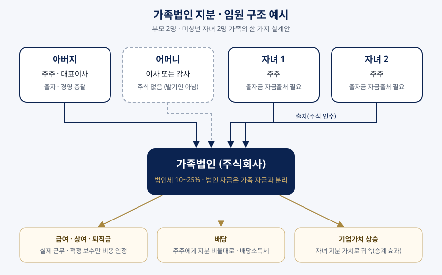
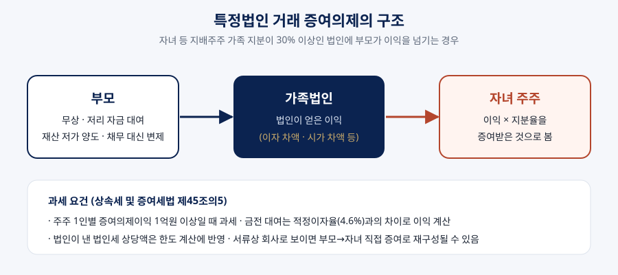

01 · 상속·증여세 뉴스레터 No.6
가족법인, 절세 플랫폼이 되려면
설립 판단 · 지분 설계 · 설립 절차부터 소득세 · 건강보험료 · 상속증여세 전략과 2026년 세무 리스크까지
결론부터
가족법인은 부모가 경영을 맡고 배우자 · 자녀가 지분을 갖는 일반 주식회사입니다. 잘 설계하면 ① 높은 개인 소득세율을 법인세율로 낮추고, ② 건강보험료 부담을 줄이며, ③ 앞으로 늘어날 자산 가치를 자녀 지분에 쌓을 수 있습니다. 그러나 세금을 당장 없애 주는 도구가 아니라 7~10년 이상 이익을 법인 안에서 재투자할 때 효과가 나는 장기 구조이고, 2026년부터 부동산 · 금융투자 중심 소규모 가족법인의 세율이 20%로 올라 설립 전 손익 검토가 더 중요해졌습니다.
1나에게 맞을까: 설립 판단 기준
| 판단 기준 | 설립을 검토할 만한 경우 | 신중해야 하는 경우 |
|---|---|---|
| 개인 소득 수준 | 종합소득 한계세율 35~45%(지방소득세 포함 38.5~49.5%)인 고소득자 | 과세표준 8,800만원 이하이고 법인 수익을 바로 생활비로 꺼내 써야 하는 경우 |
| 투자 대상 | 상가 · 꼬마빌딩 등 상업용 부동산, 해외주식 · 배당주 · 채권 | 주택(취득 · 보유 · 양도 전 단계 중과), 개인이 비과세인 국내 상장주식 소액 투자 |
| 운용 기간 | 7~10년 이상 이익을 유보 · 재투자하며 자녀 세대로 승계할 계획 | 단기 시세차익 후 바로 청산 · 개인화하려는 경우 |
2지분 · 임원 구조 설계

- 설립 초기에 지분 확정 자산과 실적이 없는 소액 자본금(예: 1,000만~2,000만원) 단계에서 가족 지분을 정해야 이후 늘어나는 이익과 자산 가치가 추가 증여세 없이 자녀 지분에 쌓입니다. 늦어도 3년 안에 마무리하는 것이 좋습니다.
- 목적별 지분율 대출 · 창업감면이 중요하면 대표(부모) 51~60%, 승계가 목적이면 부모 · 배우자 각 20~30%와 자녀 합계 40~60%처럼 분산합니다. 주주 1인 지분이 낮을수록 아래 4번의 특정법인 증여의제 한도에 여유가 생깁니다.
- 미성년 자녀 출자금 부모가 단독 설립한 뒤 자녀에게 주식을 증여하고 신고하는 방식이 깔끔합니다. 증여재산공제는 10년 합산 미성년 2,000만원, 성년 5,000만원, 배우자 6억원입니다.
- 임원 구성 자본금 10억원 미만이면 이사 1~2명으로 충분하고 감사를 두지 않아도 됩니다. 주식 없는 가족을 이사 · 감사로 두면 설립 조사보고 절차도 간편해집니다.
3설립 절차 6단계

- 본점 위치 상업용 부동산을 살 계획이면 수도권 과밀억제권역 밖에 본점을 두어야 설립 후 5년 안의 부동산 취득세 중과(4.6% → 9.4%)를 피할 수 있습니다. 공유오피스 명목 주소가 아니라 실제 업무 장소여야 합니다.
- 법인 형태 대출 · 지분 이동이 중요하면 주식회사, 폐쇄적 가족 자산관리와 임원 중임등기 부담을 줄이려면 유한회사도 검토할 수 있습니다.
- 맞춤 정관 표준정관 대신 임원 보수 · 상여 · 퇴직금 지급규정, 중간배당 조항을 넣어 두어야 이후 비용 불인정 분쟁을 막을 수 있습니다.
- 등록 시기 사업자등록은 사업 개시일부터 20일 이내에 신청하고, 이후 모든 자금 이동은 법인계좌와 장부 · 증빙으로 관리합니다.
4세 가지 절세 축
① 소득세: 세율 차이 · 과세이연 · 세 갈래 인출
개인은 추가 소득에 최고 49.5%가 바로 과세되지만, 법인은 일반법인 11~22%(지방소득세 포함), 소규모법인 22%를 내고 나머지를 재투자할 수 있습니다. 법인 돈은 한 통로가 아니라 세 갈래로 나누어 꺼냅니다.
| 인출 방법 | 활용 방식 | 주의할 점 |
|---|---|---|
| 급여 | 실제 일하는 가족 임직원에게 적정 급여 지급(법인 비용 인정) | 근무하지 않는 가족 급여는 국세청 1순위 점검 대상 |
| 배당 | 주주별 연 2,000만원 이하로 나누면 15.4% 원천징수로 종결 | 지분과 다른 차등배당은 초과배당 증여세(상증법 제41조의2) |
| 퇴직금 | 정관 규정에 따른 임원 퇴직금은 종합소득과 분리해 낮은 세율 | 임원 퇴직소득 한도(2020년 이후 근속분 2배) 확인 |
② 건강보험료(2026년 보험료율 7.19%)
| 대상 | 절감 방법 | 핵심 수치 · 주의 |
|---|---|---|
| 자산가 · 은퇴자(지역가입자) | 가족법인에서 실제 업무를 하는 임원으로 보수를 받아 직장가입자로 전환 | 재산분(점수당 211.5원) 대신 보수의 3.595%만 본인 부담. 무보수 대표는 직장자격이 없고, 실제 근무 없는 보수는 공단 점검 대상 |
| 직장인 · 임대 · 금융소득자 | 배당을 주주별 연 2,000만원 이하로 관리 | 급여 외 소득이 연 2,000만원을 넘으면 초과분에 보험료 추가 |
| 소득 없는 배우자 · 자녀 | 주주로서 배당만 받고 피부양자 유지 | 연 소득 2,000만원 이하(금융소득 1,000만원 초과 시 전액 반영), 재산세 과세표준 5.4억~9억원이면 소득 1,000만원 이하 |
③ 상속 · 증여세: 미래가치 이전과 부모 자금 활용
부모가 50억원을 모은 뒤 물려주면 최고 50%의 상속 · 증여세가 붙지만, 설립 초기에 자녀가 지분 20~40%를 갖고 법인이 10년간 순자산을 50억원으로 키우면 자녀 지분 가치 10억~20억원의 상승분에는 원칙적으로 증여세가 없습니다. 다만 상장 · 개발 등 특별한 사유로 5년 안에 가치가 급등하면 재산가치증가 증여(상증법 제42조의3)를 검토해야 합니다.

자녀에게 매년 연 2,000만원 이하 배당과 실제 근로에 따른 급여를 지급하면 10년간 국세청이 인정하는 자금출처가 쌓여, 이후 자녀의 자산 취득 때 중요한 증빙이 됩니다. 부동산을 법인 주식으로 보유하면 자녀별 · 시기별 분할 증여도 쉬워지지만, 부동산 비중이 50% 이상인 법인은 순자산가치 비중이 높게(80% 이상이면 순자산가치만으로) 평가되고 감정평가 과세도 강화되고 있어 “법인 주식은 싸게 평가된다”는 생각은 버려야 합니다.
52026년 세법 변화와 국세청 점검 포인트
지배주주 · 친족 지분 50% 초과, 부동산임대업 주업 또는 임대료 · 이자 · 배당이 매출의 50% 이상, 상시근로자 5명 미만인 소규모 가족법인은 2억원 이하 저율 구간 없이 200억원까지 20%(지방소득세 포함 22%)가 적용되고, 조세특례제한법상 중소기업에서도 제외되어 기업업무추진비 한도 축소(연 600만원), 이월결손금 공제 80% 제한 등을 받습니다.
| 과세표준(2026년 개시 사업연도) | 일반 법인 | 소규모 가족법인 |
|---|---|---|
| 2억원 이하 | 10%(지방세 포함 11%) | 20%(22%) |
| 2억원 초과 ~ 200억원 이하 | 20%(22%) | 20%(22%) |
| 200억원 초과 | 22~25% | 22~25% |
| 국세청 점검 영역 | 주로 보는 것 | 대비 방법 |
|---|---|---|
| 서류상 회사 · 우회증여 | 사업 실체 없는 자금 유입, 반복 채무면제 | 사업계획 · 투자 의사록 · 본점 운영 증빙 |
| 가족 인건비 · 경비 | 근무 없는 가족 급여, 법인카드 · 차량 사적 사용 | 근무 기록 · 업무일지 · 운행기록부 보관 |
| 가지급금 | 주주 · 대표의 법인 자금 사적 인출 | 계좌 분리, 불가피하면 4.6% 이자 수취 · 조기 상환 |
| 부동산 중과 | 주택 취득(취득세 13.4%, 종부세 2.7~5%, 양도 시 법인세 20% 추가), 과밀억제권역 취득 | 주택 취득 배제, 실제 본점 운영 |
| 자기주식 소각 등 출구 | 배우자 증여 직후 법인이 사들여 소각하는 방식 | 배당 · 부당행위 판단 위험이 커 사전 검토 필수 |
전문가와 상담하세요
가족법인의 효과는 한계세율, 투자 자산, 운용 기간, 가족의 건강보험 자격에 따라 크게 달라집니다. 설립 전에 개인 보유와 가족법인의 10년 세후 결과를 비교해 보시기 바랍니다.
가족법인 설계 상담 신청근거 및 참고자료
- 국가법령정보센터 · 법인세법 제55조(세율)
- 국가법령정보센터 · 법인세법 시행령 제42조(소규모법인 요건)
- 국가법령정보센터 · 조세특례제한법 시행령 제2조(중소기업 범위)
- 국가법령정보센터 · 상속세 및 증여세법 제45조의5(특정법인 증여의제)
- 국가법령정보센터 · 상속세 및 증여세법 시행령 제34조의5
- 국가법령정보센터 · 상속세 및 증여세법 제53조(증여재산공제)
- 국가법령정보센터 · 국민건강보험법 시행령 제44조(보험료율)
- 한국경제 · 부동산임대업이 주된 사업이면 법인세율 일괄 적용(2026.3.11.)
- 택스워치 · 가족법인 세무 리스크와 국세청 점검 동향
이 글은 2026년 11월 19일 현재 법령과 공개 자료를 바탕으로 한 일반 정보입니다. 지분율 · 한도 계산 예시는 단순화한 것이며, 가족 구성과 사업 내용, 자금 거래 방식에 따라 결과가 달라지므로 개별 사안은 전문가 검토가 필요합니다.